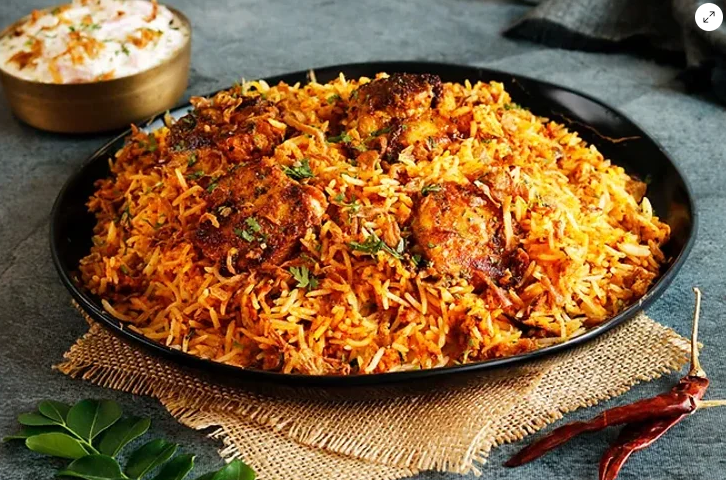
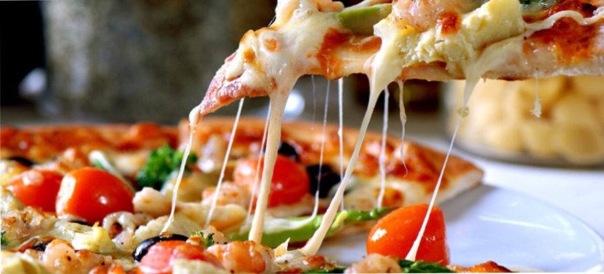
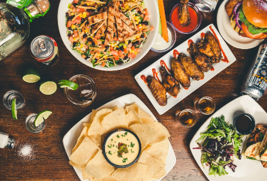
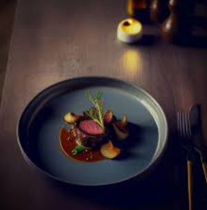

BIRYANI

True richness of the biryani hyderabadi chicken is basically
marinated overnight in yogurt and spices, so each piece of it
tastes with a different flavor. Then it is layered with fragrant
basmati rice and topped with fried onions, mint, and coriander,
which gives the biryani its uniquely characteristic taste -----BIRYANI
PIZZA

The bottom of the pizza, called the "crust", may vary widely
according to style—thin as in a typical hand-tossed Neapolitan
pizza or thick as in a deep-dish Chicago-style. It is traditionally plain,
but may also be seasoned with garlic or herbs, or stuffed with cheese.
The outer edge of the pizza is sometimes referred to as the cornicione.
[49] Some pizza dough contains sugar, to help its yeast rise and enhance
browning of the crust------PIZZA

